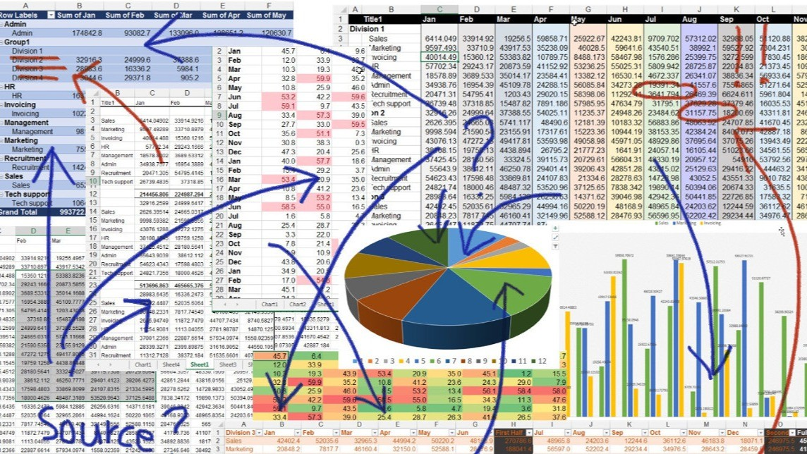
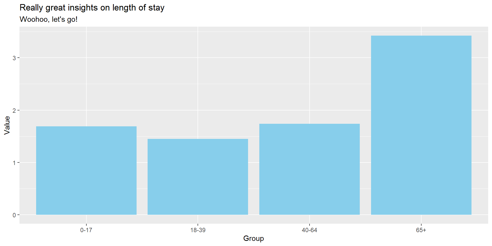
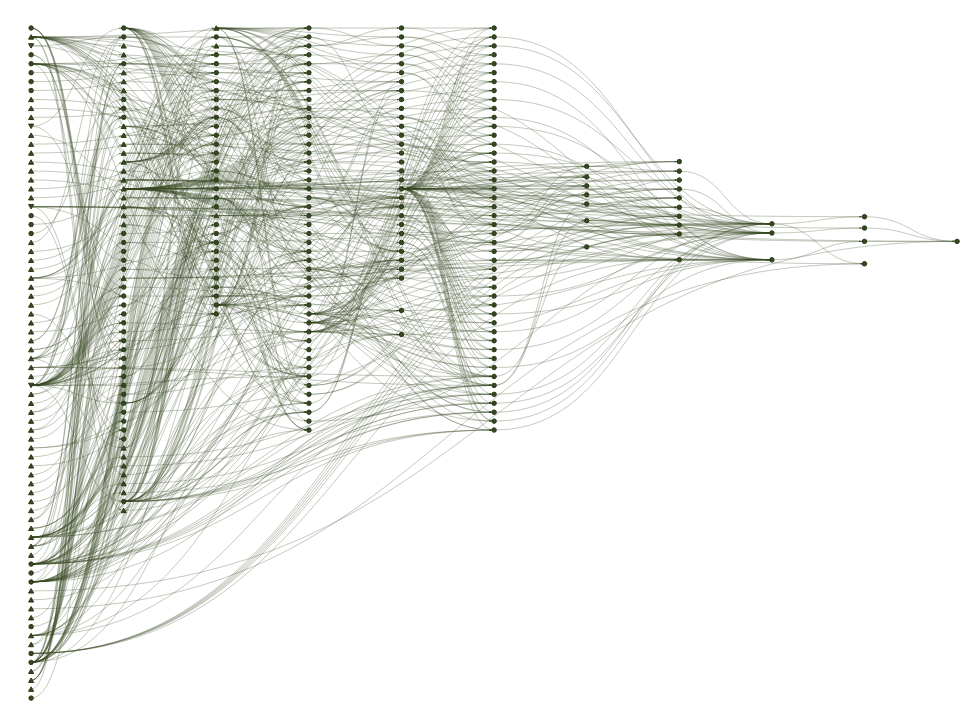
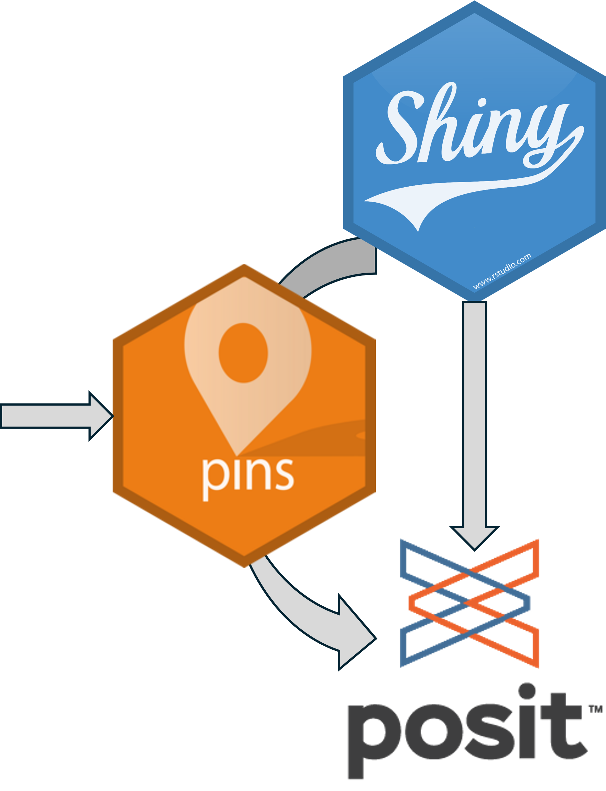
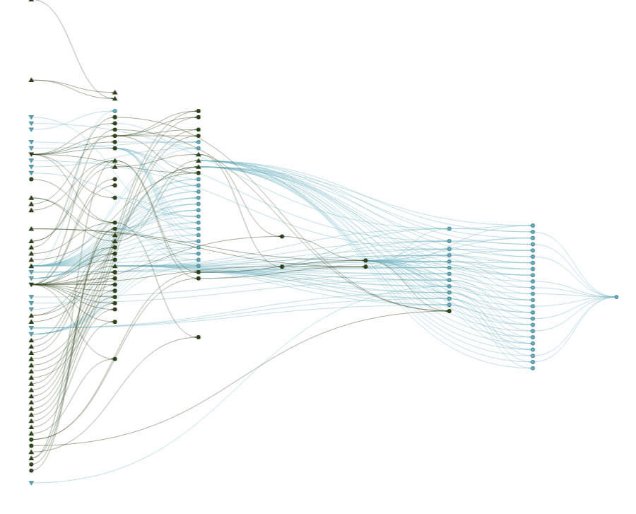

library(targets) # load package
tar_script() # creates 'dummy' targets script (beware, will overwrite if you
# already have one!)
# Create the "R" directory for functions to sit if it doesn't exist
if (!dir.exists("R")) {
dir.create("R")
}
# Create some blank function scripts to reflect your workflow
# You could just create 1 e.g. 'Functions.R' but I prefer grouping
files <- c("data_grab.R", "data_wrangle.R", "plot_data.R")
paths <- file.path("R", files)
file.create(paths[!file.exists(paths)]){targets} for dummies (by a dummy)
Informal, experiential walk-through of the R targets package and workflow
Andy Hood
2026-07-02
Setting the scene

- Workflows are in your head
- Poor documentation??
- Forget dependencies
- Work starts off simple -> snowballs into 4,000 line nightmare
- All your processing done in output (shiny / quarto etc…)
Typical workflow
- Get data
- Wrangle data
- Calculate ‘stuff’
- Visualise
- Report/publish
{targets} package intro
Targets is a pipeline tool for statistics and data science. It compiles all the tasks in a given pipeline (project) and only runs/computes them when things change. Dependencies are ALL automatically processed.
It’s a function-orientated programming approach to managing workflow.
Testimonials (1)
“I would like to calmly and freely state - certainly without a manager pointing a gun at me - that the targets R package is fantastic. Before it entered my life, my analysis lived across dozens of mysteriously named scripts with embedded functions hiding in plain sight. Changing one line meant re-running everything in a careful order hoping I hadn’t missed one of the steps. Now, and I cannot stress enough that I am saying this of my own volition, targets tracks dependencies and only reruns what’s affected, which feels less like coding and more like being gently guided by a very competent but slightly controlling assistant. Small changes no longer trigger full existential crises—or full pipeline reruns. It’s efficient and reproducible. Five stars. Please let me leave now. I have a family.” - Alex L
Testimonials (2)
“Was proper reet bloody great” - Jac G
“Told A&M what to do with {targets} in total lay-terms with no jargon. They’re all incompetent, did it totally wrong. Idiots!” - Matt D
“Isn’t cheese wonderful? Love a drop of Wensleydale melted on a slice of freshly home-baked and toasted seeded batch. Mmmmmmm” - Craig P
Testimonials (3)
“I find targets most useful for data wrangling as it saves time not having to keep re-running the same code, helps simplify your output scripts and rendering them quicker. I used it for the positive deviance work where I was running lots of different regression models which were slow to compute - with targets you just run them once and the results are stored; then you can refer back to those versions as and when needed.” - Sarah L
✅ Pros
- Forces functional programming
- Scales well to large workflows
- Aids reproducible pipelines
- Efficient incremental builds (reduces duplication)
- Dependency tracking - don’t worry about order of code
- Facilitates collaboration
⚠️ Cons
- Forces functional programming
- Less suited for quick ad hoc analysis
- Initial setup can be complex
- Debugging pipelines can be tricky
- Repeat authentication if external data connection
Alternatives and complements
- systemPipeR - grounded in bio-stats, command line driven
- Nextflow - unix based, git integration, HPC, probably suit production environment
- Snakemake - python equivalent (?) of targets
Basic walk-through
Set-up
Like my middle name, this is basic. For a better and more detailed walk-through please visit here or here.
Writing functions
Grab data
Wrangle data
#' create some metrics from grouped data
#' @param data the target object with relevant data
#' @param group the variable in the data to group by
#' @returns an aggregate dataframe ready for plotting
wrangle_data <- function(data,group){
wrangled <- data |>
group_by({{ group }}) |>
summarise(spells = sum(spells),
los = sum(los),
patients = sum(patients)) |>
ungroup() |>
rename(group = {{ group }}) |>
mutate(spells_per_pat = round(spells/patients,2),
avg_los = round(los/spells,2))
return(wrangled)
}Plot data
#' create a plot of our data
#' @param data the target object with relevant data
#' @returns a lovely plot of our data
plot_data <- function(data){
plot <- data |>
ggplot() +
geom_col(aes(x=as.character(group), y=avg_los), fill = "skyblue") +
labs(title = "Really great insights on length of stay",
subtitle = "Woohoo, let's go!",
x = "Group",
y = "Value")
return(plot)
}Creating targets (_targets.R script)
Running the pipeline
Visualising the pipeline
Checking your results

Making changes
So those pesky clients of yours have now decided they want something different:
- They don’t like sky-blue and would like the chart in dark-olive-green instead!
- More interested in ethnic category than age group
- They’ve just re-run their activity query and have a file for a new year
Cut away for live demonstration…
Other examples
1.Care-shift Tracker


2.Mencap LD cohort & analysis


Useful target functions…
- tar_prune() - removes redundant targets
- tar_destroy() - go nuclear (destroys all targets)!
- tar_objects() - list of all current targets
- tar_delete(target_name) - remove specific target
- getSrcFilename(function_name) - find source file of a specific function